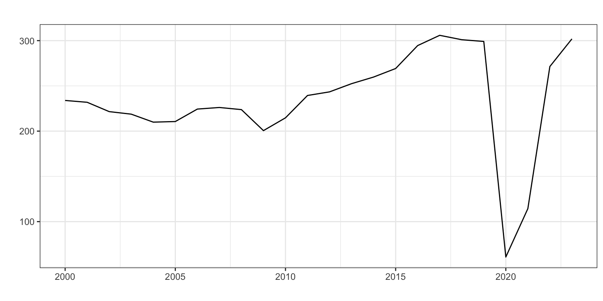
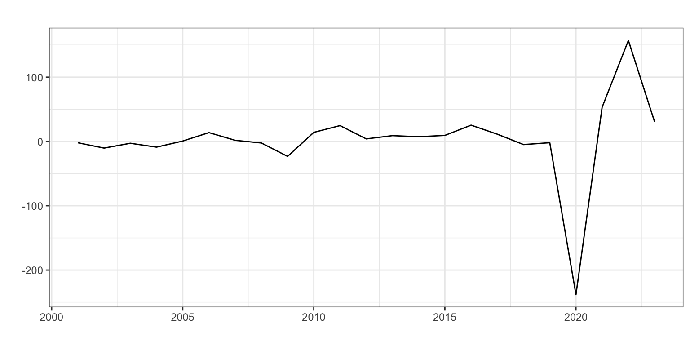
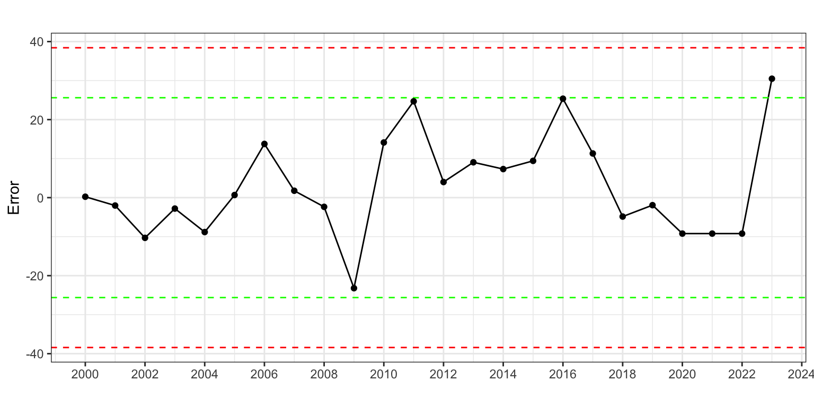
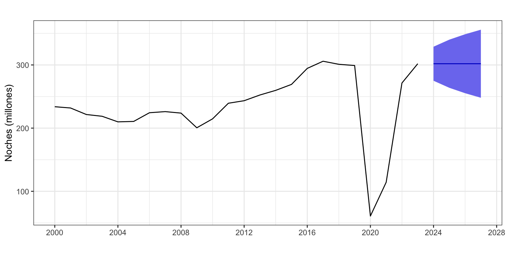

Pernoctaciones <- read.csv2("./series/Pernoctaciones.csv",
header = TRUE)
Pernoctaciones <- ts(Pernoctaciones[,2] / 1000000,
start = 2000,
frequency = 12)
Pernoctaciones <- aggregate(Pernoctaciones, FUN = sum)Pernoctaciones en alojamientos turísticos de turistas extranjeros
Procesos ARIMA (sin estacionalidad)
1 Introducción
Consideremos de nuevo la serie temporal correspondiente al número de pernoctaciones que los turistas extranjeros realizan en España en alojamientos turísticos autorizados (que llamaremos Pernoctaciones en adelante). Esta serie está disponible en Eurostat desde enero de 2000 hasta diciembre de 2023, un total de 24 años y 288 observaciones. La unidad original es número de pernoctaciones, así que dividiremos la serie por un millón para trabajar con millones de pernoctaciones.
La gráfica de la serie temporal (Figura 1, panel a) muestra en la primera década del presente siglo una tendencia suavemente decreciente en el número de pernoctaciones que, con el cambio de década, pasa a ser creciente. A finales de la década pasada se observa una caída en el número de pernoctaciones y en los últimos años el efecto de la Covid-19 y posterior recuperación. El esquema es multiplicativo.
Vamos a considerar la serie completa dado que los modelos Arima permiten incorporar el efecto de la Covid-19 como intervención. Por primera vez podremos calcular la caída en el número de pernoctaciones debida a la pandemia.
2 Transformación de la serie
La Figura 1 muestra una serie con tendencia, que desaparece al ser diferenciada. Ojo al interpretar las gráficas y no confundir la perturbación de la pandemia con tendencia. Por otro lado, la función ndiffs (que realiza un contraste formal de estacionariedad) indica que la serie es estacionaria. Sin embargo, el resultado de esta función –del contraste que realiza internamente– puede estar muy afectado por la fuerte perturbación asociada a la pandemia. De hecho, si repetimos el contraste con datos hasta 2019, aparece que es necesaria una diferenciación.
autoplot(Pernoctaciones, xlab = "", ylab = "", main = "")
autoplot(diff(Pernoctaciones), xlab = "", ylab = "", main = "")


ndiffs(Pernoctaciones)[1] 0ndiffs(window(Pernoctaciones, end = 2019))[1] 1Se opta por considerar que la serie es integrada de orden 1, \(Pernoctaciones \sim I(1)\).
3 Análisis de la serie
3.1 Identificación
Identificaremos los valores de \(p\) y \(q\) a partir de auto.arima. Pero antes vamos a crear dos variables artificiales que recojan la intervención asociada a la pandemia. Asumiremos que su efecto solo afectó los años 2020 y 2021.
d2020 <- 1 * (time(Pernoctaciones) == 2020)
d2021 <- 1 * (time(Pernoctaciones) == 2021)
auto.arima(Pernoctaciones,
d = 1,
xreg = cbind(d2020, d2021))Series: Pernoctaciones
Regression with ARIMA(0,1,0) errors
Coefficients:
d2020 d2021
-228.9771 -166.3128
s.e. 10.7224 10.7224
sigma^2 = 188.9: log likelihood = -91.86
AIC=189.72 AICc=190.99 BIC=193.13Se identifica un proceso ARIMA(0, 1, 0) sin deriva, es decir un paseo aleatorio (equivalente al método Ingenuo I).
arima010 <- Arima(Pernoctaciones,
order = c(0, 1, 0),
include.constant = FALSE,
xreg = cbind(d2020, d2021))
arima010Series: Pernoctaciones
Regression with ARIMA(0,1,0) errors
Coefficients:
d2020 d2021
-228.9771 -166.3128
s.e. 10.7224 10.7224
sigma^2 = 188.9: log likelihood = -91.86
AIC=189.72 AICc=190.99 BIC=193.13Tras estimar el modelo, el análisis del error revela de nuevo que no es necesaria más intervención (Figura 2).
error <- residuals(arima010)
sderror <- sd(error)
autoplot(error, series="Error",
colour = "black",
xlab = "",
ylab = "Error",
main = "") +
geom_hline(yintercept = c(-3, -2, 2, 3)*sderror,
colour = c("red", "green", "green", "red"),
lty = 2) +
geom_point() +
scale_x_continuous(breaks= seq(2000, 2024, 2))

3.2 Validación
Medidas de error
El error medio es 12.9 millones de pernoctaciones (RMSE) y el error porcentual medio es 4.61% (MAPE). Los intervalos de confianza de las predicciones no son válidos.
accuracy(arima010) ME RMSE MAE MPE MAPE MASE ACF1
Training set 2.84 12.86 9.84 0.24 4.61 0.34 0.19Coeficientes significativos
Los coeficientes asociados a la intervención son significativos.
coeftest(arima010)
z test of coefficients:
Estimate Std. Error z value Pr(>|z|)
d2020 -228.977 10.722 -21.355 < 2.2e-16 ***
d2021 -166.313 10.722 -15.511 < 2.2e-16 ***
---
Signif. codes: 0 '***' 0.001 '**' 0.01 '*' 0.05 '.' 0.1 ' ' 1Error de previsión extramuestral según horizonte temporal
Asumimos que se precisan diez años para hacer una buena estimación, \(k=10\), y que el horizonte temporal es cuatro años vista, \(h = 4\).
k <- 10
h <- 4
T <- length(Pernoctaciones)
s <- T - k - h
mapeArima010 <- matrix(NA, s + 1, h)
for (i in 0:s) {
train.set <- subset(Pernoctaciones, start = i + 1, end = i + k)
test.set <- subset(Pernoctaciones, start = i + k + 1, end = i + k + h)
fit <- Arima(train.set,
include.constant = FALSE,
order = c(0, 1, 0))
fcast <- forecast(fit, h = h)
mapeArima010[i + 1,] <- 100*abs(test.set - fcast$mean)/test.set
}
mapeArima010 <- apply(mapeArima010, MARGIN = 2, FUN = median)
mapeArima010[1] 3.588371 11.787518 14.295619 17.350341El error mediano de previsión varia entre el 3.6% a un año vista y el 17.4% a cuatro años vista.
4 Interpretación del modelo
El proceso es un paseo aleatorio \(Pernoctaciones \sim ARIMA(0, 1, 0)+AI\): \[(1 - L) Pernoctaciones_t = \varepsilon_t+ AI\] o \[Pernoctaciones_t = Pernoctaciones_{t-1} + \varepsilon_t + AI.\]
El modelo estimado queda: \[\widehat{Pernoctaciones}_t = Pernoctaciones_{t-1} -229 \cdot d2020 - 166 \cdot d2021.\]
Cada año el número de pernoctaciones previsto es el mismo que el del año previo.
En 2020 la caída estimada de las pernoctaciones fue de 229 millones y en 2021 de 166 millones. En 2019 el gasto medio por persona y día de un turista internacional era de 150 euros (fuente: INE, Egatur). Por tanto, las pérdidas económicas directas en el sector turístico para el año 2020 asociadas a la caída de las pernoctaciones se estiman en 34.3 mil millones de euros (aproximadamente el 3% del PIB de 2019).
5 Predicción
Podemos usar el modelo estimado para predecir las pernoctaciones para los próximos 4 años.
parima010 <- forecast(arima010,
h = 4,
level = 95,
xreg = cbind(rep(0, 4), rep(0, 4)))
parima010 Point Forecast Lo 95 Hi 95
2024 301.9272 274.9907 328.8637
2025 301.9272 263.8333 340.0211
2026 301.9272 255.2719 348.5825
2027 301.9272 248.0543 355.8001El número de pernoctaciones anual para los próximos años se estima en unos 300 millones.
autoplot(parima010,
ylab = "Noches (millones)",
xlab = "",
main = "") +
scale_x_continuous(breaks= seq(2000, 2028, 4))
